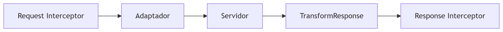

Axios
Axios es una librería cliente HTTP basada en Promesas, ampliamente usada en React para hacer peticiones a APIs. A diferencia de fetch, ofrece ventajas como:
- Interceptores (para manejar errores globalmente).
- Cancelación de peticiones.
- Transformación automática de datos JSON.
- Soporte para navegadores antiguos.
Teoría Detrás de Axios: Fundamentos y Funcionamiento Interno
🔷 1. Arquitectura de Axios
Axios se basa en un sistema modular con estos componentes esenciales:
A. Core
- Adaptadores:
- Usa XMLHttpRequest en navegadores y http en Node.js.
- Intercambiable (puedes implementar tu propio adaptador).
- Interceptores:
- Middleware para modificar requests/responses globalmente.
| axios.interceptors.request.use(config => {
config.headers.Authorization = 'Bearer token';
return config;
});
|
- Gestión de Promesas:
- Convierte callbacks en Promesas para mejor manejo asíncrono.
B. Capa de Transformación
- Transformación automática de datos:
- Convierte JSON a objetos JS sin necesidad de .json() (como en Fetch).
- Soporta transformación manual con transformRequest/transformResponse.
| axios({
transformResponse: [
(data) => JSON.parse(data).customFormat, // Transformación personalizada
],
});
|
C. Gestión de Errores
- Estructura unificada de errores:
- Detecta errores de red (4xx/5xx) y los normaliza en un objeto estándar:
| {
message: "Request failed with status code 404",
config: {...}, // Configuración de la petición
response: { data: {}, status: 404 }, // Respuesta del servidor
isAxiosError: true
}
|
🔷 2. Flujo de una Petición Axios
-
Interceptores de Request:
- Modifican la configuración antes de enviar (ej: añadir headers).
-
Adaptador:
- Decide si usa XHR (navegador) o http (Node.js).
-
Transformación de Request:
- Serializa datos (ej: objetos → JSON).
-
Respuesta del Servidor:
-
Transformación de Response:
- Parsea JSON o aplica transformaciones personalizadas.
-
Interceptores de Response:
- Manejo global de errores o datos.

🔷 3. Cancelación de Peticiones
Axios implementa el enfoque AbortController, al igual que Fetch, para evitar "memory leaks" en componentes desmontados:
| const controller = new AbortController();
axios.get('/api/data', { signal: controller.signal })
.catch(error => {
if (error.name === 'AbortError') {
console.log('Petición abortada');
}
});
// Aborta la petición
controller.abort();
|
🔷 4. Teoría de Interceptores
Los interceptores actúan como middleware en el ciclo de vida de una petición, siguiendo el patrón Chain of Responsibility:
1
2
3
4
5
6
7
8
9
10
11
12
13
14
15
16
17
18
19
20
21
22 | // Request Interceptor
axios.interceptors.request.use(
(config) => {
console.log('Request enviada:', config.url);
return config; // Debe devolver la configuración modificada
},
(error) => Promise.reject(error)
);
// Response Interceptor
axios.interceptors.response.use(
(response) => {
console.log('Response recibida:', response.status);
return response; // Devuelve la respuesta modificada
},
(error) => {
if (error.response.status === 401) {
localStorage.removeItem('token');
}
return Promise.reject(error);
}
);
|
🔷 5. Gestión de Concurrencia
Axios incluye métodos para manejar múltiples peticiones simultáneas:
axios.all() + axios.spread()
| const [users, posts] = await axios.all([
axios.get('/api/users'),
axios.get('/api/posts'),
]);
// Equivalente con Promise.all:
const [users, posts] = await Promise.all([...]);
|
Uso Básico con React
Petición GET (Ejemplo en un componente)
1
2
3
4
5
6
7
8
9
10
11
12
13
14
15
16
17
18
19
20 | import axios from 'axios';
import { useEffect, useState } from 'react';
function UserList() {
const [users, setUsers] = useState([]);
useEffect(() => {
axios.get('https://jsonplaceholder.typicode.com/users')
.then((response) => setUsers(response.data))
.catch((error) => console.error("Error fetching users:", error));
}, []);
return (
<ul>
{users.map((user) => (
<li key={user.id}>{user.name}</li>
))}
</ul>
);
}
|
Petición POST (Ejemplo con formulario)
1
2
3
4
5
6
7
8
9
10
11
12
13
14
15
16
17
18
19
20
21
22
23 | function AddPost() {
const [title, setTitle] = useState('');
const handleSubmit = async (e) => {
e.preventDefault();
try {
await axios.post('https://jsonplaceholder.typicode.com/posts', { title });
alert('Post creado!');
} catch (error) {
console.error("Error al crear post:", error);
}
};
return (
<form onSubmit={handleSubmit}>
<input
value={title}
onChange={(e) => setTitle(e.target.value)}
/>
<button type="submit">Enviar</button>
</form>
);
}
|
Axios + React Router v7 (Integración Avanzada)
Usando loader para cargar datos antes de renderizar
En React Router v7, puedes usar Axios dentro de un loader para precargar datos antes de mostrar la ruta:
1
2
3
4
5
6
7
8
9
10
11
12
13
14
15
16
17
18
19
20
21
22
23 | import { createBrowserRouter, RouterProvider } from 'react-router-dom';
const router = createBrowserRouter([
{
path: '/posts',
element: <PostsPage />,
loader: async () => {
const response = await axios.get('/api/posts');
return response.data; // Los datos estarán disponibles en useLoaderData()
},
},
]);
function PostsPage() {
const posts = useLoaderData(); // <- Datos cargados por el loader
return (
<div>
{posts.map((post) => (
<div key={post.id}>{post.title}</div>
))}
</div>
);
}
|
Usando action para enviar datos (POST/PUT/DELETE)
| {
path: '/posts/new',
element: <NewPost />,
action: async ({ request }) => {
const formData = await request.formData();
const response = await axios.post('/api/posts', Object.fromEntries(formData));
return redirect('/posts'); // Redirige después del éxito
},
}
|
Mejores Prácticas con Axios
Crear una instancia reutilizable
| // src/api/axios.js
import axios from 'axios';
export const api = axios.create({
baseURL: 'https://api.example.com',
timeout: 5000,
headers: { 'Authorization': 'Bearer token' },
});
|
Interceptores (manejo global de errores)
| api.interceptors.response.use(
(response) => response,
(error) => {
if (error.response.status === 401) {
window.location.href = '/login'; // Redirige si no está autenticado
}
return Promise.reject(error);
}
);
|
Cancelación de peticiones (evitar memory leaks)
1
2
3
4
5
6
7
8
9
10
11
12
13 | useEffect(() => {
const source = axios.CancelToken.source();
axios.get('/api/data', { cancelToken: source.token })
.then((response) => setData(response.data))
.catch((error) => {
if (axios.isCancel(error)) {
console.log('Petición cancelada');
}
});
return () => source.cancel(); // Cancela al desmontar el componente
}, []);
|
Axios vs Fetch nativo
| Característica |
Axios |
Fetch |
| Soporte navegadores |
Más amplio (IE11+) |
Modernos (necesita polyfill) |
| Transformación JSON |
Automática |
Manual (response.json()) |
| Interceptores |
Sí |
No |
| Cancelación |
Sí (AbortController) |
Sí (AbortController) |
| Progreso de carga |
Sí |
No |